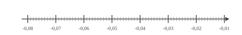
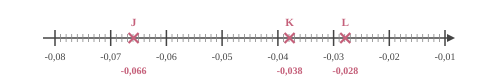

Choisis le calcul qui permet de résoudre l'équation suivante :
Pour résoudre $7x+1=23$ :
A. $(23-7)-1$
B. $23\times 7-1$
C. $\dfrac{23}{7}-1$
D. $\dfrac{23-1}{7}$
$7x+1=23$
On enlève $1$ : $7x=23-1$.
Puis on divise par $7$ : $x=\dfrac{23-1}{7}$.
Bonne réponse : D.
03
Question
$ZRSB$ est un parallélogramme tel que ses diagonales $[ZS]$ et $[RB]$ ont la même longueur et sont perpendiculaires. Déterminer la nature de $ZRSB$ en justifiant la réponse.
Les segments de même couleur sont parallèles sur le schéma suivant :
On sait que $[ZS]\perp[RB]$ et $ZS=RB$. Si un parallélogramme a des diagonales perpendiculaires et de même longueur, alors c'est un carré. $ZRSB$ est donc un carré.
04
Question
$WXY$ est un triangle rectangle en $W$ dans lequel
$WX=6$ et $WY=\sqrt{10}$.
Calculer la valeur exacte de $XY$ .
On utilise le théorème de Pythagore dans le triangle $WXY$, rectangle en $W$.
On obtient :
$\begin{aligned}
XY^2&=WX^2+WY^2\\
XY^2&=\sqrt{10}^2+6^2\\
XY^2&=10+36\\
XY^2&=46\\
XY&={\color{#8B3C52}\boldsymbol{\sqrt{46}}}
\end{aligned}$
01
Question
Dans une école de 1100 étudiants, $25\%$ des étudiants portent des lunettes.
Combien d'étudiants portent des lunettes ?
Le nombre d'étudiants qui portent des lunettes est égal à :
$1\,100 \times \dfrac{25}{100} = \dfrac{27\,500}{100}={\color{#8B3C52}\boldsymbol{275}}$.
02
Question
Placer les points : $J(-0{,}066), K(-0{,}038), L(-0{,}028)$.


03
Question
Calculer le périmètre exact d'un rectangle de longueur $7{,}3\text{ cm}$ et de largeur $2{,}4\text{ cm}$
Sur la figure ci-dessus, dans le triangle $YXT$, les droites $(XT)$ et $(UV)$ sont parallèles. Déterminer la longueur $YX$.
Dans le triangle $YXT$, les droites $(XT)$ et $(UV)$ sont parallèles.
D'après le théorème de Thalès, on a :
$\dfrac{YX}{YV} =
\dfrac{XT}{UV}$.
En remplaçant par les longueurs, on obtient :
$\dfrac{YX}{YV} = \dfrac{18}{12}=1{,}5$.
On en déduit que :
$YX = 1{,}5 \times 24 = {\color{#8B3C52}\boldsymbol{36}}$ cm.
Teresa doit acheter du gazon. Sur la notice, il est indiqué de prévoir $10$ kg pour $50\text{ m}^2$. Combien doit-elle en acheter pour une surface de $250\text{ m}^2$ ?
Commençons par trouver combien de kg il faut prévoir pour $1\text{ m}^2$.
$1\text{ m}^2$, c'est ${\color{#C5607A}\boldsymbol{50}}$ fois moins que 50$\text{ m}^2$. $10$ kg $\div {\color{#C5607A}\boldsymbol{50}} = 0{,}2$ kg on a donc besoin de ${\color{#C5607A}\boldsymbol{0{,}2}}$ kg pour recouvrir $1\text{ m}^2$. Cherchons maintenant la quantité de kg nécessaire pour recouvrir $250\text{ m}^2$. $250\text{ m}^2$, c'est ${\color{#C5607A}\boldsymbol{250}}$ fois plus que $1\text{ m}^2$. ${\color{#C5607A}\boldsymbol{0{,}2}}$ kg $\times {\color{#C5607A}\boldsymbol{250}} = 50$ kg Teresa aura besoin de ${\color{#8B3C52}\boldsymbol{50}}$ kg pour recouvrir $250\text{ m}^2$.
03
Question
Donner le nom de chacun des solides.
Prisme droit avec une base ayant $4$ sommets.
04
Question
Compléter à l'aide des longueurs $WT$, $WV$ et $TV$ :
$$
\cos\left(\widehat{WTV}\right)=\dfrac{\ldots}{\ldots}
$$
$WTV$ est rectangle en $W$ donc :
$$
\cos\left(\widehat{WTV}\right)
= {\color{#8B3C52}\mathbf{\dfrac{WT}{TV}}}.
$$